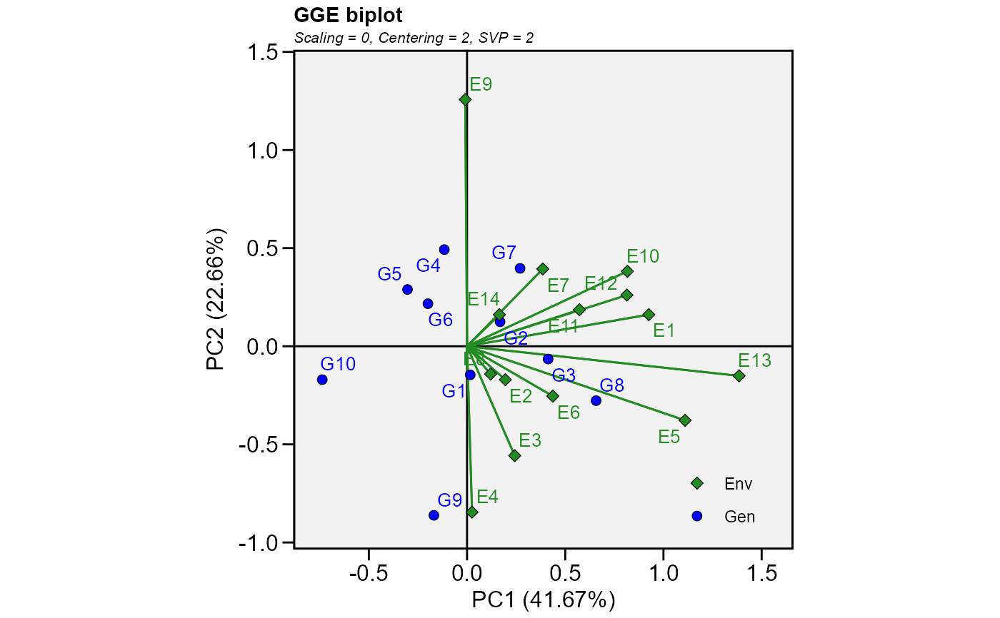
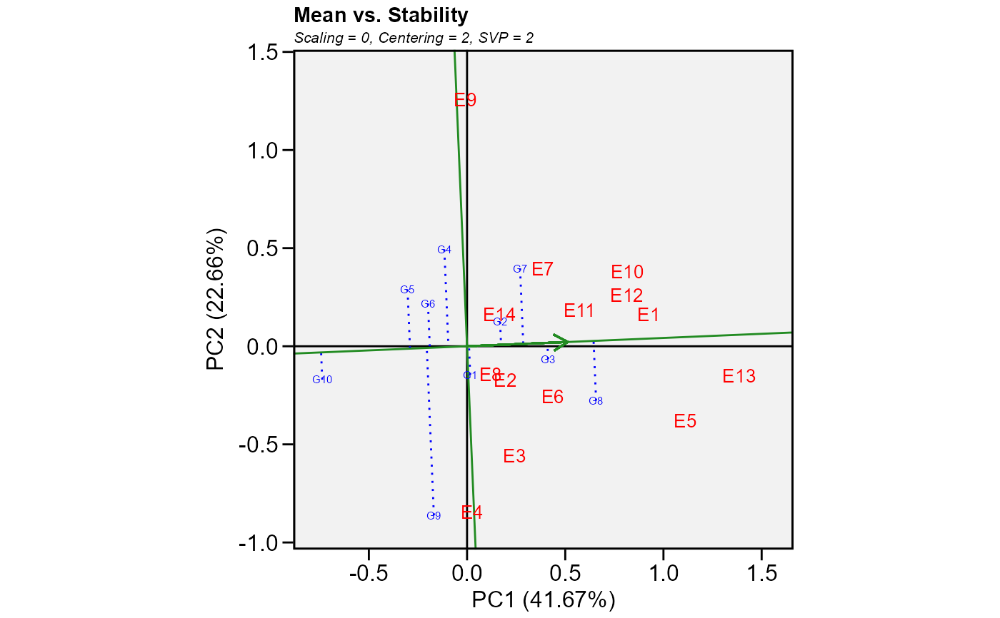

Produces a ggplot2-based GGE-GT-GYT biplot based on a model fitted with the
functions gge(), gtb(), and gytb().
Usage
# S3 method for class 'gge'
plot(
x,
var = 1,
type = 1,
repel = TRUE,
repulsion = 1,
max_overlaps = 20,
sel_env = NA,
sel_gen = NA,
sel_gen1 = NA,
sel_gen2 = NA,
shape.gen = 21,
shape.env = 23,
line.type.gen = "dotted",
size.shape = 2.2,
size.shape.win = 3.2,
size.stroke = 0.3,
col.stroke = "black",
col.gen = "blue",
col.env = "forestgreen",
col.line = "forestgreen",
col.alpha = 1,
col.circle = "gray",
col.alpha.circle = 0.5,
leg.lab = NULL,
size.text.gen = 3.5,
size.text.env = 3.5,
size.text.lab = 12,
size.text.win = 4.5,
size.line = 0.5,
axis_expand = 1.2,
title = TRUE,
plot_theme = theme_metan(),
...
)Arguments
- x
An object with classes
ggegtb, orgytb.- var
The variable to plot (useful for
ggeobjects. Defaults tovar = 1the first variable ofx.- type
The type of biplot to produce.
Basic biplot.
Mean performance vs. stability (gge biplots) or the The Average Tester Coordination view for genotype-trait and genotype-yield*trait biplots.
Which-won-where.
Discriminativeness vs. representativeness.
Examine an environment (or trait/yield*trait combination).
Ranking environments (or trait/yield*trait combination).
Examine a genotype.
Ranking genotypes.
Compare two genotypes.
Relationship among environments (or trait/yield*trait combination).
- repel
If
TRUE(default), the text labels repel away from each other and away from the data points.- repulsion
Force of repulsion between overlapping text labels. Defaults to
1.- max_overlaps
Exclude text labels that overlap too many things. Defaults to 20.
- sel_env, sel_gen
The name of the environment (or trait/yield*trait combination) and genotype to examine when
type = 5andtype = 7, respectively. Must be a string which matches a environment or genotype label.- sel_gen1, sel_gen2
The name of genotypes to compare between when
type = 9. Must be a string present in the genotype's name.- shape.gen, shape.env
The shape for genotype and environment indication in the biplot. Defaults to
shape.gen = 21(circle) for genotypes andshape.env = 23(rhombus) for environments. Values must be between21-25:21(circle),22(square),23(rhombus),24(up triangle), and25(low triangle).- line.type.gen
The line type to highlith the genotype's vectors. Defaults to
line.type.gen == "dotted.- size.shape
The size of the shape (both for genotypes and environments). Defaults to
2.2.- size.shape.win
The size of the shape for winners genotypes when
type = 3. Defaults to3.2.- size.stroke, col.stroke
The width and color of the border, respectively. Default to
size.stroke = 0.3andcol.stroke = "black". The size of the shape will besize.shape + size.stroke- col.gen, col.env, col.line
Color for genotype/environment labels and for the line that passes through the biplot origin. Defaults to
col.gen = 'blue',col.env = 'forestgreen', andcol.line = 'forestgreen'.- col.alpha
The alpha value for the color. Defaults to
1. Values must be between0(full transparency) to1(full color).- col.circle, col.alpha.circle
The color and alpha values for the circle lines. Defaults to
'gray'and0.4, respectively.- leg.lab
The labs of legend. Defaults to
NULLisc('Env', 'Gen').- size.text.gen, size.text.env, size.text.lab
The size of the text for genotypes, environments and labels, respectively.
- size.text.win
The text size to use for winner genotypes where
type = 3and for the two selected genotypes wheretype = 9. Defaults to 4.5.- size.line
The size of the line in biplots (Both for segments and circles).
- axis_expand
multiplication factor to expand the axis limits by to enable fitting of labels. Defaults to 1.2
- title
Logical values (Defaults to
TRUE) to include automatically generated information in the plot such as singular value partitioning, scaling and centering.- plot_theme
The graphical theme of the plot. Default is
plot_theme = theme_metan(). For more details, seeggplot2::theme().- ...
Currently not used.
References
Yan, W., and M.S. Kang. 2003. GGE biplot analysis: a graphical tool for breeders, geneticists, and agronomists. CRC Press.
Author
Tiago Olivoto tiagoolivoto@gmail.com
Examples
# \donttest{
library(metan)
mod <- gge(data_ge, ENV, GEN, GY)
plot(mod)

plot(mod,
type = 2,
col.gen = 'blue',
col.env = 'red',
size.text.gen = 2)
#> Warning: All aesthetics have length 1, but the data has 24 rows.
#> ℹ Please consider using `annotate()` or provide this layer with data containing
#> a single row.

# }